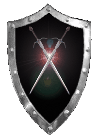

| Übersicht,
Newbies und Fragen |
|
Kleines Bild vor der Adresse
|
| Aki ad Anárion (RIP) |
Ist dieses kleine Bild vor der Adresse
http://www.scherbenwelten.de/ schon immer da?
Ichs sehs nämlich heut zum ersten mal.
Was soll das eigentlich darstellen? |
04.06.08 22:46

|
|
| Dorothea von Georgia (RIP) |
Wenn du das internetexplorer e meinst dann ja |
04.06.08 22:49
|
|
| Lilokel ok Schnjokel (RIP) |
Nein, ist erst seit heute da.
Kann aber auch nciht erkennen was es sein soll :D |
04.06.08 22:52
|
|
| Aki ad Anárion (RIP) |
nee, im hab firefox
vor der Adresse in der Adresszeile ist ein kleines Bildchen, wie zB das mini-youtube zeichen bei youtube.
Das seh ich heut zum ersten mal |
04.06.08 22:53
|
|
| Shâna Carnesîr (RIP) |
Wie der Kopf eines ägyptischen Pharaonensarg, oder? |
04.06.08 22:55
|
|
| Narndil Biunda v. Tacheless (RIP) |
Ich sehs auch zum ersten mal. Keine Ahnung was das ist, aber allemal hübscher als das normale doofe weisse Blatt im FF ^^ |
04.06.08 22:55
|
|
| Aki ad Anárion (RIP) |
Ich find dass sieht aus, wie ein Fliegenkopf XD |
04.06.08 22:56
|
|
Lascalan
 |
 |
04.06.08 23:12
 |
|
| Cordelia deLor (RIP) |
ich seh das bild auch heute morgen das erstmal^^ |
05.06.08 5:21
|
|
| Chantal Pridorius (RIP) |
Also ich sehe da nix |
05.06.08 6:16
|
|
| Narndil Biunda v. Tacheless (RIP) |
Lascalan hats ^^ Das ist der innere Kreis von dem WebTalesLogo. Also der Runde mit der Figur drinne ^^ |
05.06.08 6:24
|
|
Solara
 |
war jedenfalls bis gestern ein anderes :) |
05.06.08 7:16
|
|
| Dorothea von Georgia (RIP) |
bei mir is noch das internet explorer E |
05.06.08 12:54
|
|
| Nalon din Adun (RIP) |
Internet Explorer ist halt doof, bzw. so von sich überzeugt, dass er keine anderen Logos duldet ;) |
05.06.08 12:59
|
|
Lysira Sternenlicht
 |
In meinem Firefox ist es noch das normale weiße Blatt ... nix mit SW-Logo :/ |
05.06.08 14:01
|
|
Ninniach Lhuthien
 |
ich habe IE und sehe es auch und bedanke mich für die Aufklärung....
|
05.06.08 22:18
|
|
| Braniag (RIP) |
Bei mir ist das so:
http://scherbenwelten.de -> Bildchen
http://www.scherbenwelten.de -> Kein Bildchen |
07.06.08 13:39
|
|
| Fáin Cortez (RIP) |
Bei mir isses im ie mit www. und ohne www. und überhaupt, find ich das niedlich^^ |
07.06.08 14:15
|
|
| Nathan von Xanthias (RIP) |
hmmmmm...
sollten mal das auch für Fierfox optimieren, damit das auch für uns sichtbar wird. Obwohl ein eigenes sw logo schöner wäre... |
07.06.08 22:22
|
|
| Merry Bierbauch (RIP) |
Also ich nutze Firefox und ich seh das Bildchen.. |
07.06.08 22:25
|
|
| Dorothea von Georgia (RIP) |
Jetzt hab ich das bildchen auch |
08.06.08 12:00
|
|
| Aki ad Anárion (RIP) |
jo, ich habs auch mit firefox
aber ein eigenes sw logo wäre schon cooler
gibts sowas überhaupt?
ich glaub nicht, oder? |
08.06.08 23:31
|
|
| Kage Hitomi (RIP) |
Machts halt eins, wenns das unbedingt braucht... |
08.06.08 23:48
|
|
| Natrixa (RIP) |
das heisst übrigens favicon :) |
09.06.08 22:19
|
|
| Marduc (RIP) |
Danke favicon, man lernt nie aus :) |
10.06.08 10:39
|
|
Übersicht,
Newbies und Fragen
|